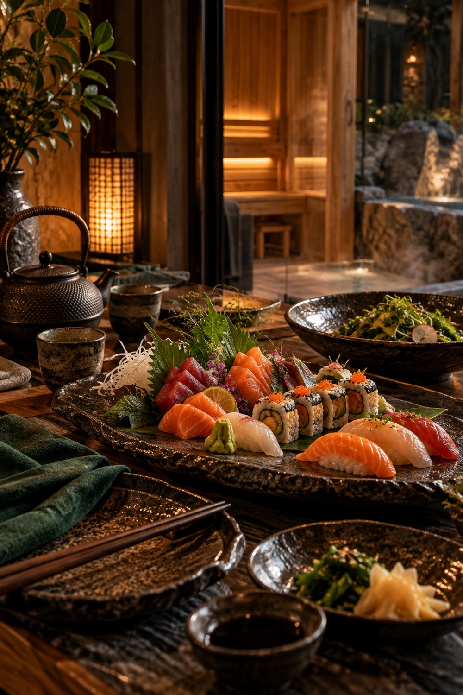
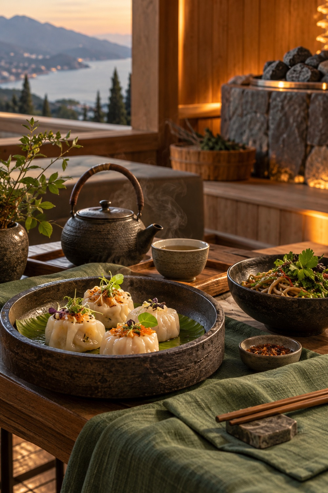
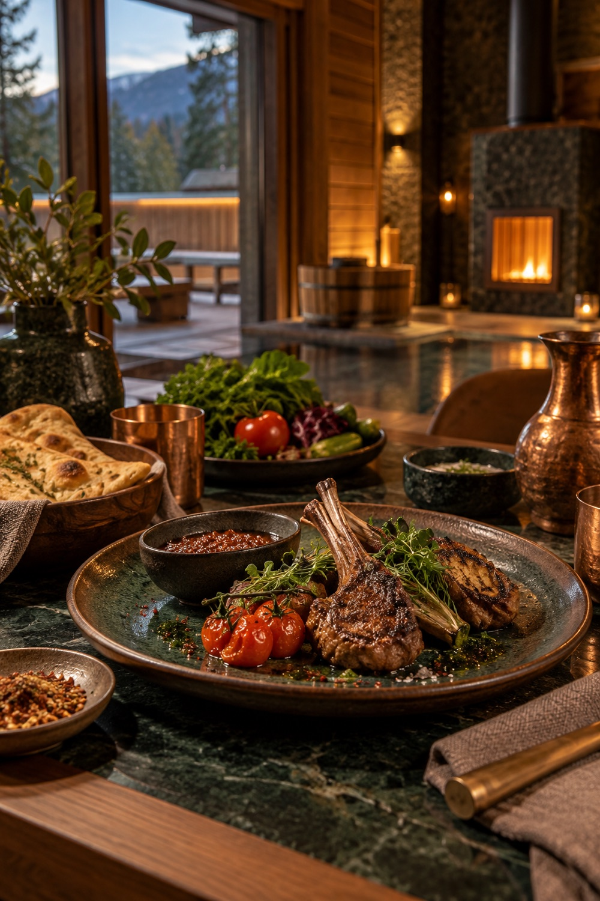
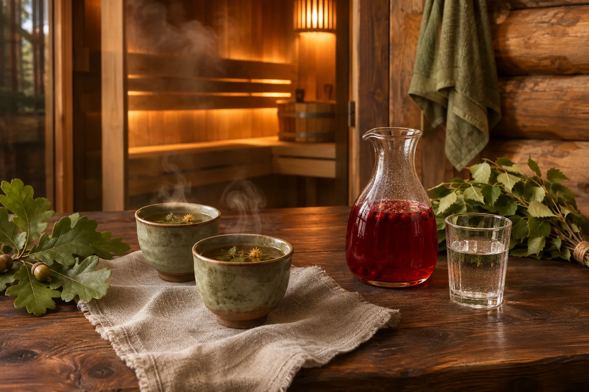

ПОСЛЕ ПАРНОЙ
Вечер
за своим столом
После жара хочется остаться, налить чай и поесть без спешки. Меню собираем под гостей и согласуем с площадкой заранее.
КУХНЯ / СВОЙ СТОЛ
Кухня под гостей,
вечер по своему вкусу
Банный день продолжается за столом. Можно выбрать японскую, азиатскую, кавказскую кухню или собрать свое меню. Пожелания к блюдам, напиткам и подаче обсудим заранее, а состав ужина подтвердим с площадкой и поваром.
Морепродукты, рис, небольшие порции и спокойная подача после парения.

Димсамы, лапша и блюда, которые удобно разделить за общим столом.

Горячее с огня, зелень, лепешки и длинный вечер без спешки.
ЧТО НАЛИТЬ ПОСЛЕ ПАРНОЙ
Напитки тоже
часть вечера
Травяной чай, морс, вода и напитки к ужину. Предпочтения гостей обсудим заранее, а конкретный выбор подтвердим вместе с меню.
Обсудить стол
МЕНЮ ПОД ГОСТЕЙ
Что вы любите
после бани?
Расскажите о кухне, напитках и ограничениях в питании. Уточним состав стола до подтверждения банного дня.
Обсудить меню